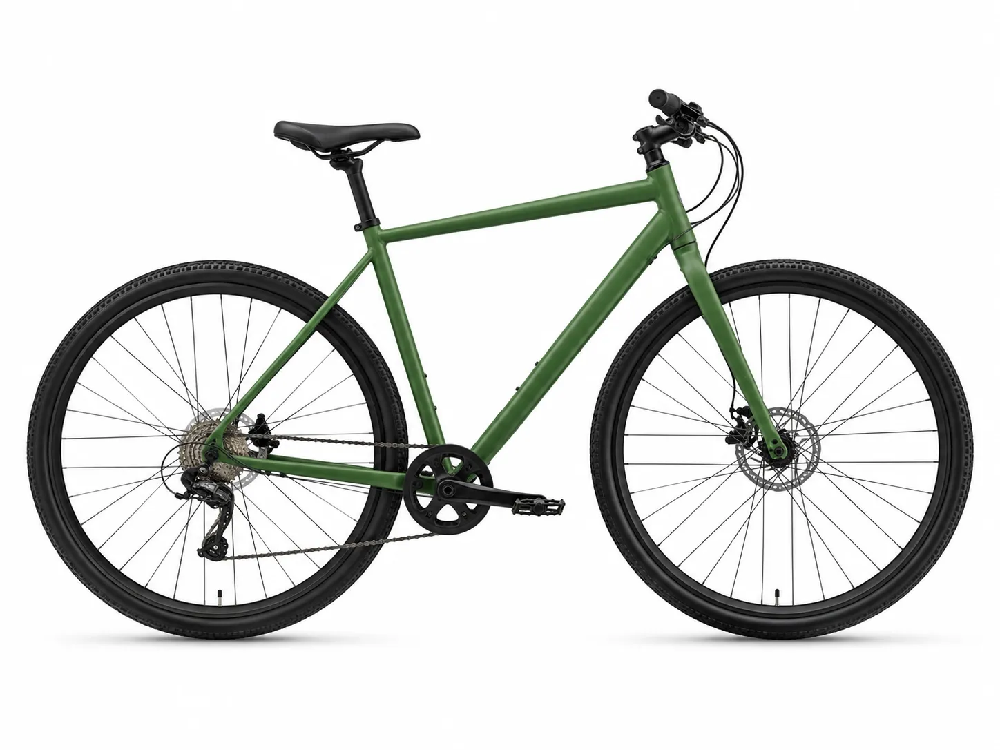
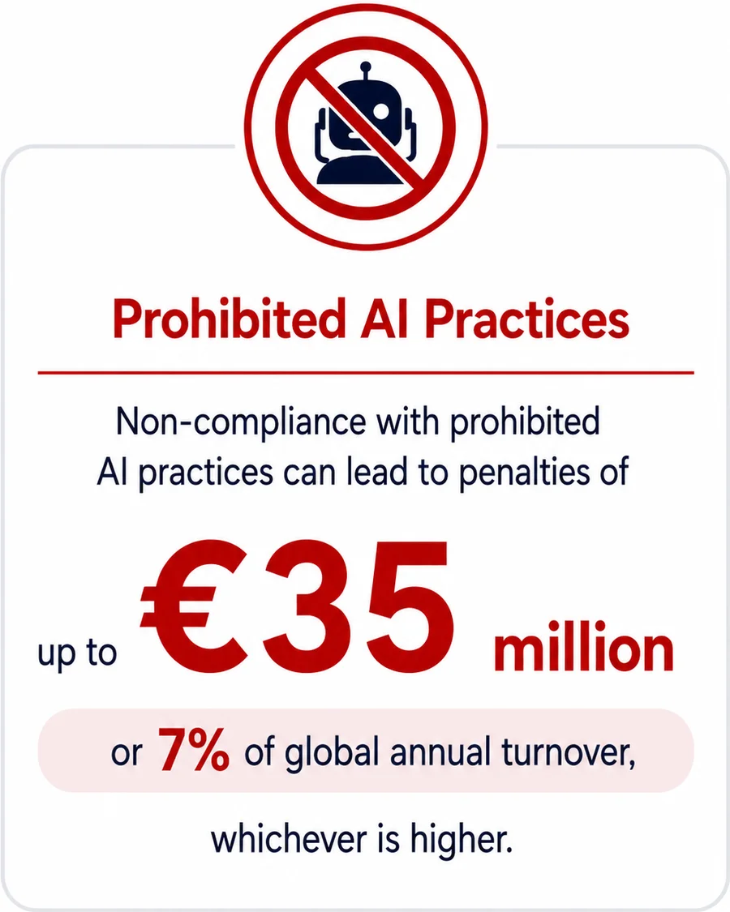
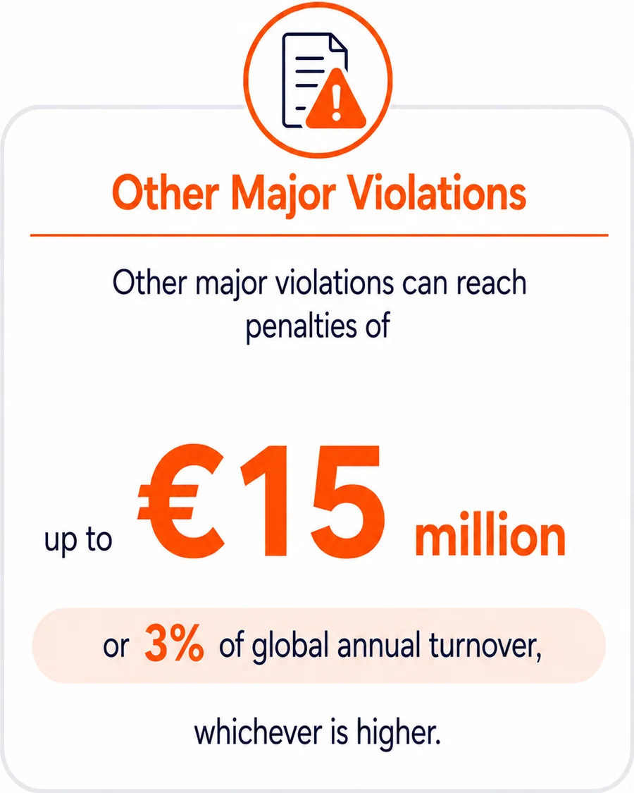
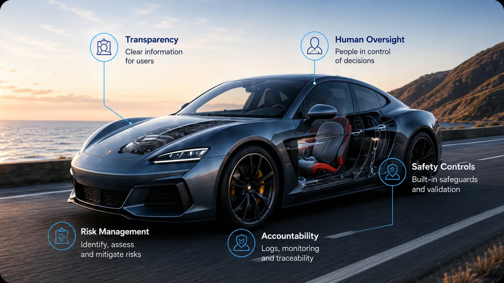

Low-Risk AI
Like bicycles.
Low risk.
Minimal obligations.

The cost of getting this wrong is not small.


Buckle up.
From August 2026, major provisions of the EU AI Act begin applying to many AI systems, especially those considered high-risk.
And many companies are still treating this as a legal compliance exercise.
That is a mistake.

Suddenly, horsepower is not enough.
You need a safe vehicle.
That is essentially what the EU AI Act is doing for AI.
Imagine you have built the fastest sports car in the world.
The engine is incredible. The acceleration is mind-blowing.
Investors love it. Customers want it.
But then regulators inspect the car and ask:
Can this AI be trusted
when real people
depend on it?
That is where many teams
may get surprised.
Like bicycles.
Low risk.
Minimal obligations.

Like everyday cars.
Useful, but they need
basic safeguards and
transparency.
Like trucks carrying
hazardous materials.
Powerful and valuable,
but heavily regulated.
...it may fall into the high-risk category.
This is the AI equivalent of:
The EU AI Act is not
really about AI.
It is about accountability.
When GDPR arrived, privacy suddenly became everyone’s problem. The EU AI Act feels very similar.
The same way seat belts did not make cars slower
and safety standards did not stop automakers from innovating...
AI governance will not stop innovation.
It will separate teams that built a cool demo
from teams that built a trustworthy product.
The question will not just be:
It will be:
That is a very different engineering challenge.
And many organizations have not started it yet.
Are you building AI with governance, transparency, and compliance in mind today—
or planning to retrofit trust later?